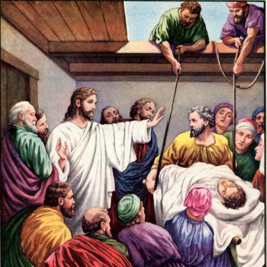

Lord Jesus Heals A Man With Leprosy
The Faith Of The Centurion
Lord Heals The Mother Of Peter Wife
Lord Jesus Calm The Storm
Lord Jesus Restores Two Demon-Possessed Men
Lord Jesus Heals A Man's Hand On The Sabbath

Lord Jesus Forgives And Heals A Paralyzed
Lord Jesus Heals A Woman With An Issue Of Blood
Lord Jesus Heals A Jairus's Daughter

Lord Jesus Heals a Man Unable to Speak

The Death Of Lazarus
Lord Jesus Feeds The Five Thousand
Lord Jesus Feeds The Four Thousand
Lord Jesus Walks On The Water
The Faith Of A Canaanite Woman
Lord Jesus Heals The Sick In Gennesaret
Lord Jesus Heals People At The Sea Of Galilee
Lord Jesus Heals A Demon-Possessed Boy